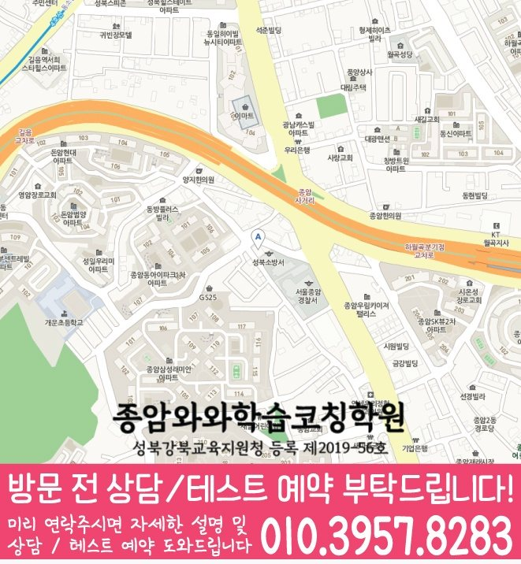

길음동 상담에서는 어휘 누적, 문법 정리, 독해 흐름, 학교 본문 복습이 실제 문제 풀이와 시험 준비로 이어지는지 확인합니다.
☁️ 서울 성북구 길음동 영어·수학 학습관리
길음동 영어수학학원 선택 기준
길음동에서 안내하는 지점은 종암점입니다. 영어와 수학의 안내 학년, 방문 장소, 필요한 도움을 각각 비교하는 페이지입니다. 두 과목을 함께 신청해야 한다는 뜻은 아닙니다.
서울
성북구
영어·수학 집중
초등·중등·고등
길음동에서 확인할 종암점 수강·위치 정보
영어는 어휘·문장 해석·독해 중 어느 단계가 어려운지, 수학은 조건을 읽는 단계와 계산 단계 중 어디에서 멈추는지 따로 적어 오세요. 두 과목의 주간 과제량을 함께 확인하면 한 과목의 숙제 때문에 다른 과목 복습이 밀리는지 비교하기 좋습니다.
- 주소
- 서울 성북구 종암로27길 13 도원프라자 501
- 찾아오는 길
- 종암로27길 13 도원프라자 5층 (메가커피 건물) 성북소방서와 GS 주유소 사이길로 들어오시면 소방서 바로 옆 건물입니다~
- 시작 시간 참고
- 평일 오후 3시 이후
- 주말 안내
- 토요일. 참고 시간: 12~3시 수학,과학.
| 과목 | 안내 학년 | 학년별 수강 안내 |
|---|---|---|
| 영어 | 초3~고3 | 초등 영어 안내중등 영어 안내고등 영어 안내 |
| 수학 | 초3~고3 | 초등 수학 안내중등 수학 안내고등 수학 안내 |
| 국어 | 초3~고3 | 국어 안내 학년 확인 |
| 과학 | 중1~중3 | 과학 안내 학년 확인 |
| 사회 | 개설 학년 문의 | 사회 안내 학년 확인 |
안내 학년과 현재 모집 가능 여부는 구분해서 확인하세요. 실제 요일·시작과 종료 시각·교재·수업 횟수·비용은 희망 과목과 학년을 정해 상담에서 확인할 수 있습니다.
홈페이지 상담 연락처: 010-6839-8283. 방문 전에는 이 페이지의 주소와 희망 과목·학년을 함께 확인해 주세요.

이미지를 누르면 확대할 수 있습니다. 원본 크기로 전환해 작은 글씨와 전체 내용을 읽어 보세요.

이미지를 누르면 확대할 수 있습니다. 원본 크기로 전환해 작은 글씨와 전체 내용을 읽어 보세요.
English & Math Guide
길음동 영어수학학원, 두 과목을 따로가 아니라 흐름으로 봐야 합니다.
길음동에서 영어수학학원을 찾는 학부모님은 보통 “영어가 먼저인지, 수학이 먼저인지”, “두 과목을 함께 관리해도 되는지”를 고민합니다. 실제로는 과목을 나누기 전에 아이가 공부를 실행하는 방식부터 살펴보는 것이 중요합니다.
영어는 어휘 누적, 문법 정리, 독해 속도, 학교 지문 복습이 연결되어야 하고, 수학은 개념 이해, 유형 훈련, 계산 실수, 오답 재풀이가 끊기지 않아야 합니다. 특히 공부 시간은 길지만 교재·단원별 완료 결과를 설명하기 어려운 경우라면 진도보다 막힌 단계와 완료 기준을 먼저 구분해야 합니다. 길음동 영어수학학원 상담에서는 두 과목의 현재 위치를 함께 확인해 우선순위를 정리합니다.
종암중, 사대부중, 개운중, 사대부고, 용문고 주변 학교의 진도와 시험 준비 흐름을 상담 때 함께 확인합니다.
길음동 학생의 개념 이해, 유형 적용, 계산 정확도, 오답 재풀이 흐름이 끊기지 않도록 주간 계획 안에서 함께 조정합니다.
길음동 학생의 시험 기간에는 영어와 수학의 공부량이 한쪽으로 쏠리지 않도록 주간 계획을 조정합니다.
Grade Coaching
길음동 학년별 상담 자료와 공부 점검 기준
같은 영어수학 수업이라도 초등·중등·고등 단계에 따라 목표가 달라집니다. 현재 학년과 학교 진도, 최근 학습 기록을 함께 보아야 실제 관리 순서를 정할 수 있습니다.
초등 단계에서는 어휘 누적, 문법 정리, 독해 흐름, 학교 본문 복습을 확인하고, 개념 이해, 유형 적용, 계산 정확도, 오답 재풀이 흐름이 매일 이어지도록 작은 루틴을 만듭니다. 공부 습관이 잡히는 시기라 짧고 꾸준한 관리가 중요합니다.
학교 시험 범위에 맞춰 영어의 취약 단원과 수학의 누적 과제를 함께 관리합니다. 내신 대비는 시험 직전이 아니라 평소 누적 관리가 핵심입니다.
영어의 점수 변동 원인과 수학의 누적 학습 흐름을 함께 확인합니다. 과목별 우선순위를 잡아 시험 기간 계획이 흔들리지 않게 돕습니다.
Recommended
길음동에서 이런 학생이라면 영어수학 상담을 권합니다.
영어 단어는 외우지만 독해에서 자주 막히는 학생길음동 상담에서는 어휘, 문법, 문장 해석, 지문 복습이 이어지는지 확인합니다.
수학 개념은 들었지만 문제 적용이 약한 학생길음동 학생의 기록을 기준으로 개념 설명 후 바로 유형으로 연결되는지, 오답 원인을 스스로 말할 수 있는지 점검합니다.
학습 기록과 실제 실행이 어긋나는 학생공부 시간은 길지만 교재·단원별 완료 결과를 설명하기 어려운 경우라면 공부 시간을 늘리기 전에 막힌 단계와 완료 기준부터 다시 정리할 필요가 있습니다.
영어·수학 수강 비교
영어와 수학에서 확인할 도움 비교하기
| 확인 단계 | 영어에서 볼 기록 | 수학에서 볼 기록 |
|---|---|---|
| 현재 이해 | 단어 뜻을 알아도 읽기 어려운 문장을 표시합니다. | 개념을 설명할 수 있어도 식을 세우기 어려운 문제를 표시합니다. |
| 답을 만든 근거 | 답의 근거가 된 지문 부분과 해석을 남깁니다. | 문제 조건과 선택한 식·풀이 방법의 이유를 남깁니다. |
| 설명 뒤 재확인 | 같은 표현을 다른 문장에서 읽거나 써 봅니다. | 같은 개념을 쓰는 다른 조건의 문제를 혼자 시도합니다. |
| 질문 방법 | 문장 구조·어휘·답의 근거 중 막힌 부분을 묻습니다. | 조건 해석·풀이 선택·계산 중 멈춘 단계를 묻습니다. |
영어는 문장 하나, 수학은 풀이가 남은 문제 하나로 시작할 수 있습니다. 많이 틀린 과목만 고르기보다 설명을 들은 뒤 혼자 다시 할 수 있었는지를 함께 비교하세요.
상담 뒤 확인
길음동 상담 내용을 다음 공부에 연결하기
두 과목의 개설 학년과 수업 장소가 같은지 먼저 확인하세요. 별도 센터로 안내되는 수학 과정은 해당 수강 페이지의 주소와 조건을 확인한 뒤 방문해야 합니다.
학교 자료는 재학 학교에서 받은 시험 범위·진도표·교재를 준비하세요. 학교 이름만으로 별도 반이나 특정 출제 방식이 운영된다고 판단하지 않습니다.
Target Schools
길음동 주변 학교 자료를 상담에 활용하는 방법
길음동 주변 학생들이 상담 전 확인하기 쉽도록, 현재 정리된 학교 목록을 학년 단계별로 나누어 담았습니다.
종암중
사대부중
개운중
사대부고
용문고
학교별 교과 진도, 시험 범위, 수행평가 준비 상황은 학생마다 다르기 때문에 상담 시 현재 교재와 최근 평가지를 함께 확인하면 더 정확한 학습 계획을 세울 수 있습니다.
학교 목록은 상담 준비를 위한 지역 참고 정보입니다. 특정 학교와의 제휴나 별도 반 개설을 의미하지 않습니다. 학생이 학교에서 받은 실제 진도표·평가 안내·사용 교재를 가져와 수업에서 확인할 범위와 집에서 복습할 범위를 나누어 질문하세요.
Checklist
길음동 영어수학학원 상담 전 체크리스트
길음동 영어수학학원 영어 확인 자료: 현재 교재, 최근 시험지, 반복해서 막히는 단원
길음동 수학 확인 자료: 과제 기록, 오답 재풀이 여부, 다음 진도 준비 상태
학교별 확인 자료: 종암중·사대부중과 학생이 가져온 실제 진도표·시험 범위
공부 시간은 길지만 교재·단원별 완료 결과를 설명하기 어려운 경우에 해당하는지 보여주는 플래너와 최근 실행 기록
FAQ
길음동 영어수학학원 자주 묻는 질문
길음동 영어수학학원 상담은 어떤 순서로 진행되나요?
먼저 현재 교재와 학교 진도, 최근 시험지, 반복 오답을 확인합니다. 그다음 영어와 수학에서 혼자 해결되는 부분과 설명이 필요한 부분을 나누고, 학생이 실제로 실행할 수 있는 학습 순서를 안내합니다.
학교 진도와 길음동 영어수학학원 학습 계획은 어떻게 맞추나요?
제공된 학교 자료와 학생이 가져온 실제 진도표를 기준으로 시험 범위와 복습 시기를 확인합니다. 확인되지 않은 학교 일정은 임의로 가정하지 않고 상담 시점의 자료에 맞춰 계획을 조정합니다.
길음동 영어수학학원에서는 영어와 수학을 함께 관리하나요?
함께 살펴보되 같은 방식으로 묶지는 않습니다. 영어는 어휘 누적, 문법 정리, 독해 흐름, 학교 본문 복습을 기준으로, 수학은 개념 이해, 유형 적용, 계산 정확도, 오답 재풀이를 기준으로 각각 확인한 뒤 학년과 학교 진도에 맞춰 우선순위를 정합니다.
길음동 영어수학학원을 알아볼 때 진도가 빠른 수업이 항상 좋은가요?
진도 속도보다 배운 내용을 학생이 혼자 설명하고 문제에 적용하며, 틀린 문제를 다시 풀 수 있는지가 더 중요한 확인 기준입니다. 길음동 영어수학학원의 실제 적용 범위는 학생의 학년과 현재 학교 진도, 상담 시 확인한 자료에 따라 달라질 수 있습니다.
길음동 영어수학학원을 알아볼 때 시험 기간에는 평소와 무엇을 다르게 확인하나요?
학교별 시험 범위와 남은 기간을 먼저 확인하고, 새 문제보다 취약 단원 복습과 반복 오답의 우선순위를 높여 과목별 계획을 조정합니다. 길음동 영어수학학원의 실제 적용 범위는 학생의 학년과 현재 학교 진도, 상담 시 확인한 자료에 따라 달라질 수 있습니다.
상담 참고
길음동 상담 시 확인할 영어수학 학습 변화
길음동 상담에서는 공부 시간을 길게 적기보다 교재·단원·분량·완료 기준이 보이는 계획인지 확인합니다.
종암중·사대부중과 현재 교재를 함께 보면 영어와 수학에서 학교 진도와 개인 복습이 어긋난 지점을 구분하기 쉽습니다.
시험 범위와 남은 기간을 기준으로 영어와 수학의 점검 순서를 나누면 한쪽 과목에 계획이 쏠리는 것을 줄일 수 있습니다.
다른 지역 안내
길음동 주변 영어수학학원도 함께 보기
같은 시군구와 가까운 지역의 영어수학 상담 페이지로 자연스럽게 이동할 수 있게 정리했습니다.
Page Route
길음동 페이지 이동
현재 페이지와 연결된 상위 페이지를 빠르게 확인할 수 있습니다.
종암점 지점 사진